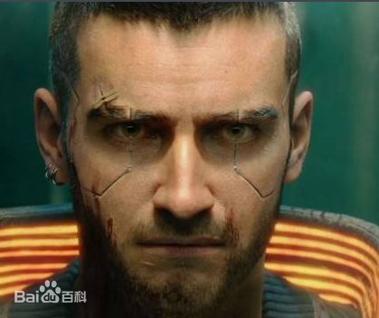
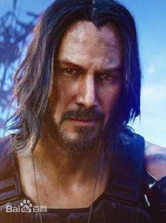
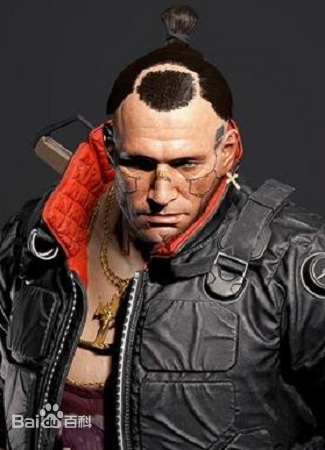
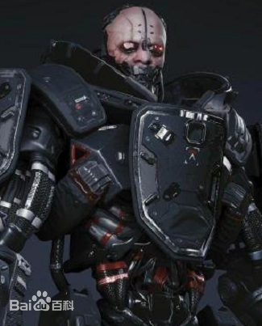

|  | V V可以供玩家选择的三种身份：V（流浪者）：游荡恶土，搜刮废料场，掠夺油库，在公路上讨生活。被流浪者家族养大。诚实、正直，以及对自由充满热爱。V（街头小子）：吃百家饭长大，在街头过日子。在黑帮、中间人、性偶、不入流的毒贩子中生活。在这弱肉强食，有着丛林法则的夜之城生活。V（公司员工）：经历过很多，灵活变通，用别人的秘密获利，情报就是手里的武器。根本就没有所谓的公平竞争，只有成王败寇。 |  | 强尼·银手 赛博朋克系列的核心人物、超人气的摇滚小子、武侍乐队的主唱。在赛博朋克2077中由好莱坞男星基努·里维斯扮演。 |
|  | 杰克·威尔斯 V在早期接触到的重要角色之一，也是玩家在几次任务中的搭档，他操着一口浓郁的西班牙口音并且十分厌恶拾荒者（Scavengers）。 |  | 亚当·重锤 全身义体化的改造人，一直以来他都是荒坂的死忠。时过境迁，2077年的他必须在夜之城找到属于自己的位置。 |